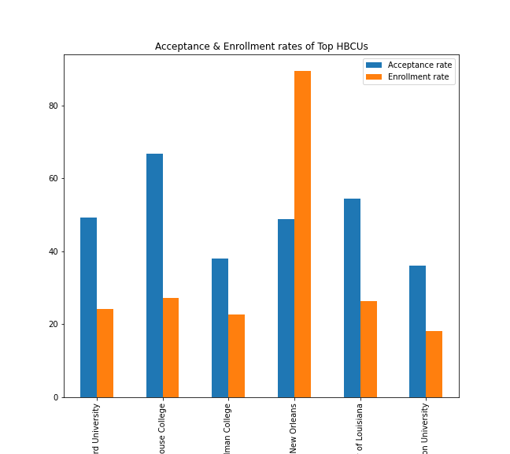
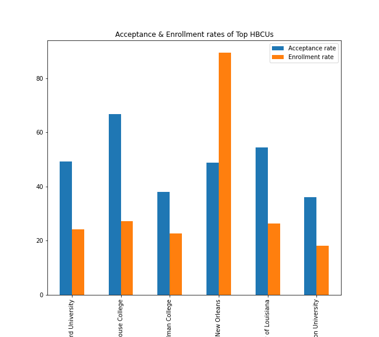

Embarking on the college journey is the dream for numerous high school students, although the reason for attending can be extremely varied. Some students base their decisions on economic factors, some on campus life, and others, simply on prestige. On this page, we are narrowing down our data to explore what it takes to get accepted and enroll into some of the top universities in the nation.
HBCUs are a rich part of U.S. history, and have produced some of the most brilliant minds to have ever blessed this country. In this chart, we are illustrating the acceptance and enrollment rates of the top HBCUs in the country; based on combined math and critical reading scores averaging 600 and above.


A university’s prestige is an immensely important attribute when it comes to school selection. Certain universities and colleges uphold reputations that are synonymous with success. In this chart, we are analyzing the enrollment and acceptance rates of the top universities in the nation; based on combined math and critical reading SAT scores averaging 780 and above.

In Georgia, unfortunately, the school system is not touted as one of the most premier in the nation, but that is not to say we do not have a plethora of great universities and colleges throughout the state. This chart is an illustration of the enrollment and acceptance rates of the top universities in Georgia, based on math and critical reading SAT scores averaging 600 and above.

For students and faculty, the admissions process can be extremely arduous and sometimes stressful, but after getting admitted what are the most important factors that go into a student’s decision to enroll in a university. Considering the current issue with student debt in our country, costs would seem to be one of, if not the most important factor to consider when enrolling in school. In this chart, we are analyzing whether there is a correlation between a university’s tuition and fees and their enrollment rate.

For students and faculty, the admissions process can be extremely arduous and sometimes stressful, but after getting admitted what are the most important factors that go into a student’s decision to enroll in a university. Considering the current issue with student debt in our country, costs would seem to be one of, if not the most important factor to consider when enrolling in school. In this chart, we are analyzing whether there is a correlation between a university’s tuition and fees and their enrollment rate.